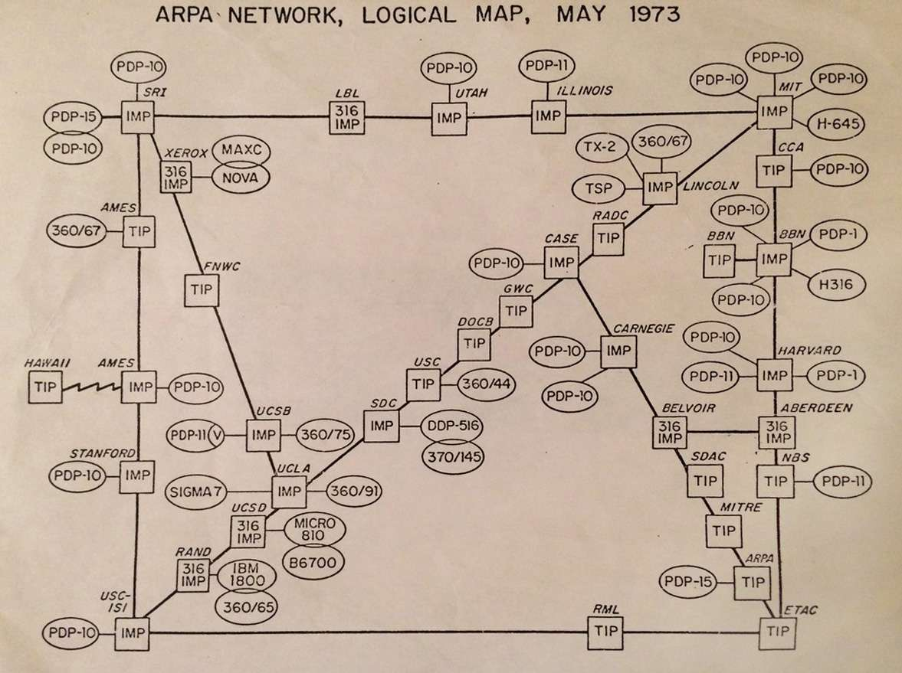
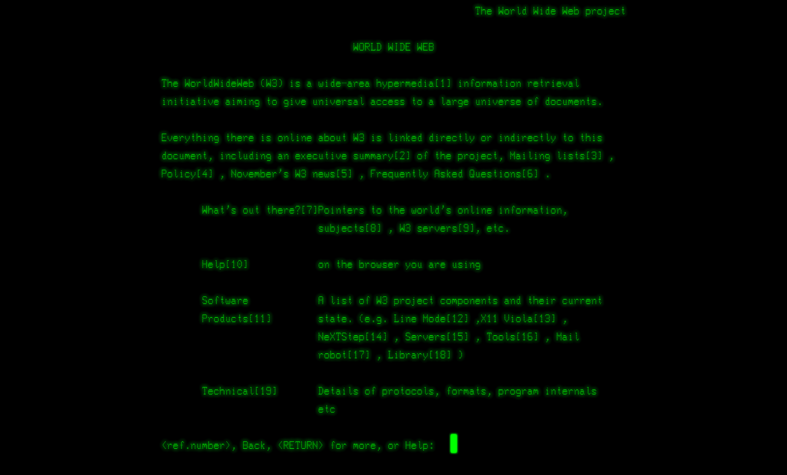
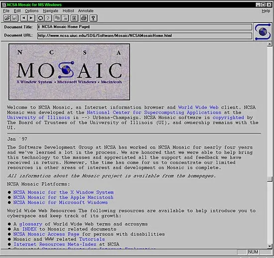
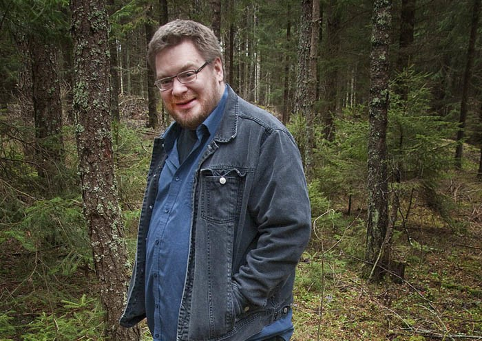

ARPANET var det första nätverket som blev en föregångare till dagens internet. Det utvecklades 1969 av den amerikanska försvarsmyndigheten ARPA. Syftet med ARPANET var att göra det möjligt för datorer på olika platser att kommunicera och skicka information till varandra. Nätverket växte snabbt när fler datorer anslöts, och lade grunden för det internet vi använder idag.

Tim Berners-Lee är den brittiske mannen bakom World Wide Web, också känd som 'webben'. Han skapade den första websidan 1989 på ett forskningscentrum i Schweiz, men det är inte förens 1991 sajten blir offentlig. 1993 släpps rättigheterna till webben fria, vilket görs så att system sprids världen över. Systemets syfte är att enkelt kunna länka och visa saker på internet.
Den första webbsidan skapades 1989 av Tim Berners-Lee. Den innehåller information om The World Web (webben.) Besök själv: https://info.cern.ch/

Den första stora webbläsaren var Mosaic, som släpptes 1993. Med Mosaic kunde användare enkelt navigera mellan olika webbsidor. Det som gjorde webbläsaren särskilt betydelsefull var att den kunde visa inte bara text, utan även bilder, video och ljud direkt på webbsidorna.

En IP-adress är ett unikt identifikationsnummer som tilldelas till alla enheter som är kopplade till ett nätverk, som mobiler, datorer, servrar. En DNS (Domain Name System) gör så att i stället för att skriva in den långa och krångliga IP-adressen skriver du in ett domännamn istället, t.ex aftonbladet.se
Sveriges första hemsida får adressen lysator.liu.se. Den skapas år 1993 av Per Hedbor som var medlem i datorföreningen Lysator, på Linköpings Universitet. Den innehöll information om föreningen verksamheter och lite om medlemmarna. Hemsidan finns kvar, en idag.

https://internetmuseum.se/tidslinjen/arpanet/ https://internetmuseum.se/tidslinjen/www/ https://internetmuseum.se/utstallningar/webbdesign/mosaic-den-grafiska-webblasaren-for-massorna/ https://internetmuseum.se/tidslinjen/dns-skapas/ https://internetmuseum.se/tidslinjen/lysators-hemsida/